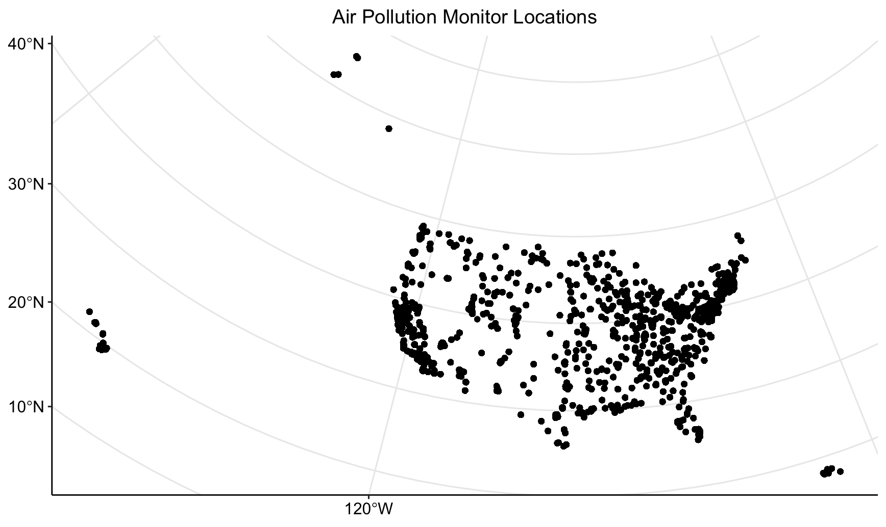
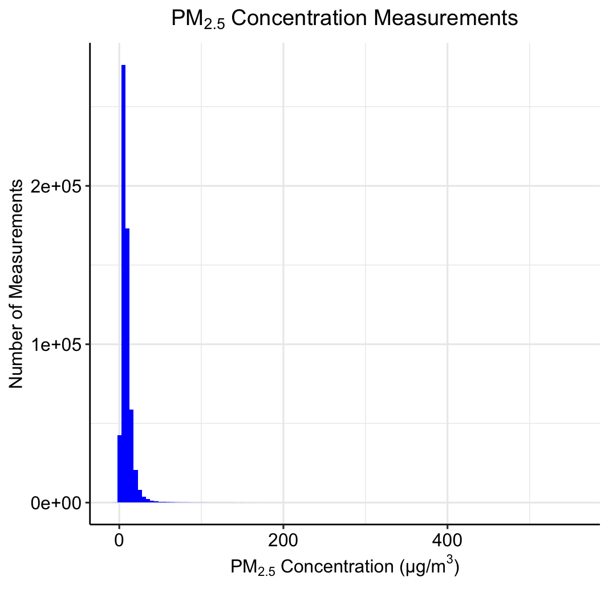
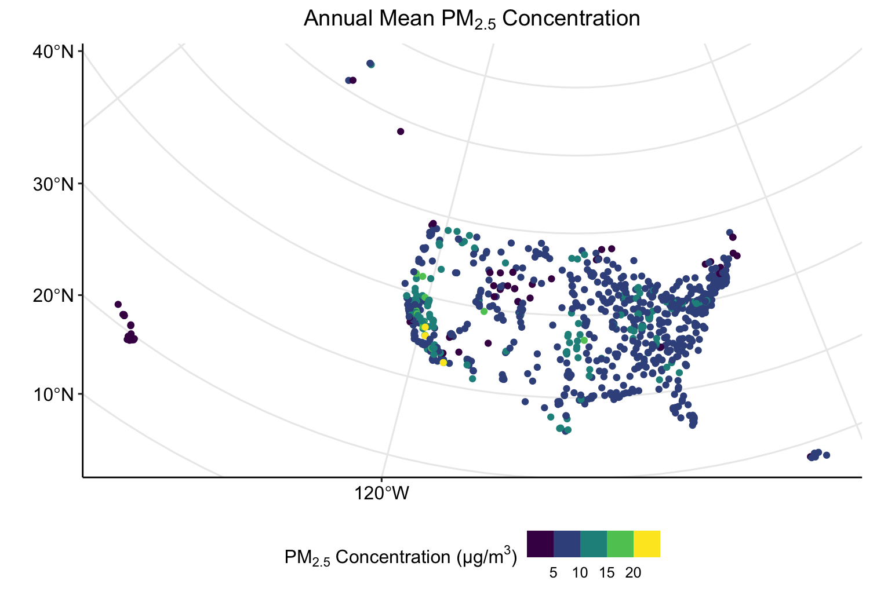
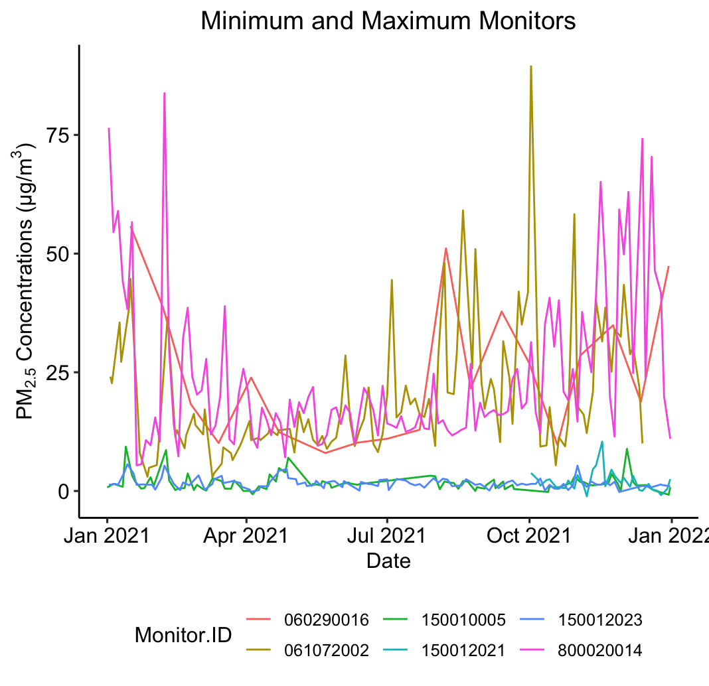
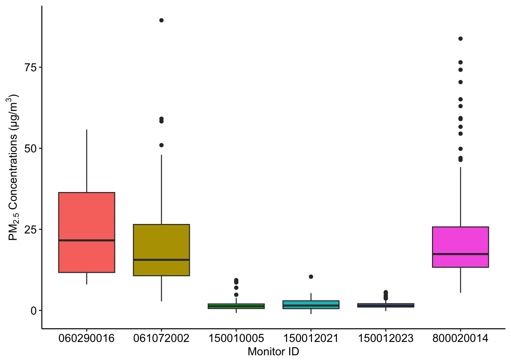

2 Point Data


Point Data Access, Preparation, and Exploratory Analysis in R
Date Modified: May 6, 2024
Authors: Mitchell Manware  , Kyle P. Messier
, Kyle P. Messier 
Key Terms: Air Pollution, Geospatial Data, Particulate Matter
Programming Language: R
2.1 Introduction
Air pollution monitoring data from the United States Environmental Protection Agency (EPA) will be used to demonstrate using point data with the sf package (1).
This tutorial will demonstrate the following steps with point data in R:
- Downloading data from a URL
- Importing data
- Checking data type, structure, and class
- Reclassifying data
- Computing summary and zonal statistics
- Plotting individual and multiple data sets
The exploratory analyses in this unit are designed for educational purposes only. The results of the following analyses are not peer-reviewed findings, nor are they based on any hypotheses.
2.2 Access, Download, and Unzip
To download data with the utils::download.file() function, define two variables. One variable to store the website URL where the data exists and a second to store the file path for where the file should be saved.
Multiple chunks of code in this tutorial will contain / YOUR FILE PATH /. To run the code on your machine, substitute / YOUR FILE PATH / with the file path where you would like to store the tutorial data.
url_epa <- "https://aqs.epa.gov/aqsweb/airdata/daily_88101_2021.zip"
destination_epa <- "/ YOUR FILE PATH /epa_data.zip"
download.file(
url_epa,
destination_epa
)The file downloaded from the EPA website is a zip file. Zip files need to be unzipped (decompressed) in order to access the data within. Unzip the EPA air pollution file with utils::unzip().
Unzipping a .zip file will decompress the contents within. Spatial data sets can be very large (i.e., > 1 GB ), so check the size of the data before unzipping on your machine.
The numeric value size of the file is listed under Length.
After inspecting the file size, unzip epa_data.zip.
Inspecting the file with utils::unzip(list = TRUE) returned the size of the file, but also the name of the data file of interest. The desired data file can also be identified with list.files().
Other file names may be returned if / YOUR FILE PATH / is a directory with other contents (e.g., Desktop or Documents folder).
2.3 Data Preparation
2.3.1 Import
Now that the contents of the zip file have been saved on your machine and the data file of interest has been identified, import the data with sf::st_read().
The previous chunk of code returned a Warning: message. This warning informs the user that the imported data does not have native spatial features, so the data was imported as a data.frame.
2.3.2 Inspect Structure
Inspect the structure of pm to see its class, column names, column classes, and the first two (specified by vec.len = 2) data points from each column.
2.3.3 Subset
Checking the data structure shows that pm is a very large data set. Each of the variables convey important information related to air pollution monitoring, but not all will be utilized in these exploratory analyses.
The data set can be reduced to include only the variables of interest with the subset() function. The select = argument indicates which variables to be retained in the new data set.
pm <- subset(pm, select = c(
State.Code,
County.Code,
Site.Num,
Latitude,
Longitude,
State.Name,
Date.Local,
Arithmetic.Mean
))Re-running str(pm) after subsetting the data set shows that all observations (n = 590,208) of the variables of interest (n = 8) have been retained.
2.3.4 Reclassify
The str() function showed the class of each variable within the data set. All of the retained variables are of class character, indicated by : chr and the quotations around each observation ("01" "01" ...).
The class of a variable depends on the information conveyed by the data stored within that variable. For example, character is an appropriate class for the pm$State.Name variable because each observation is a character string labeling in which state the monitor was located. Alternatively, character is not appropriate for the pm$Arithmetic.Mean or pm$Date.Local variables because each observation is a numeric decimal or time-referenced date, respectively.
The as. functions can be used for reclassifying data. Reclassify pm$Arithmetic.Mean as a number, and pm$Date.Local as a date.
After running the as. functions, ensure that the two variables have been reclassified to the desired classes.
2.3.5 Convert to sf Object
With the variables of interest selected and reclassified, pm can be converted to spatially defined sf object. The sf::st_as_sf() function creates a $geometry field based on the latitude and longitude coordinates contained within pm. The coords = c() argument specifies the column names which contain the coordinate values.
The columns containing coordinate values will not always be “Latitude” and “Longitude”. Use str() to see column names and identify which contain the coordinate values.
Inspect the classes of pm_sf and pm_sf$geometry to see their differences, and how each are different than class(pm).
class(pm_sf) returned both "sf" and "data.frame", indicating that it contains both spatial and non-spatial data.
2.3.6 Coordinate Reference System and Projection
The coordinate reference system of an sf object can be checked with sf::st_crs().
The previous chunk of code shows that pm_sf does not have a native coordinate reference system. The same function, sf::st_crs(), can be used to assign a coordinate reference system to an sf object. For this example, the World Geodetic System 1984 (WGS 84) will be used (EPSG code: 4326).
An sf object with a coordinate reference system can be transformed (projected) into a different coordinate reference system with sf::st_transform(). The area of interest for these exploratory analyses is the conterminous United States, so the Albers Equal Area projected coordinate system will be used (EPSG code: 5070). For a detailed description of coordinate reference systems, and how to select the best system for your analyses, see Section Coordinate Reference Systems and Projections in the Chapter Getting Started.
An sf object without an assigned coordinate reference system cannot be transformed. sf::st_crs() must be used to assign a coordinate reference system to an sf object that does not have one.
2.4 Exploratory Analysis
2.4.1 Plot
Plotting spatial data is important for visualizing and analyzing patterns in the data. Initialize a plot for the locations of each air pollution monitoring station with ggplot2::ggplot(). Identifying the data set to be plotted within the geom_sf() argument informs the function that the data is an sf object.
ggplot() +
geom_sf(data = pm_sf) +
ggtitle("Air Pollution Monitor Locations") +
theme_pubr() +
theme(plot.title = element_text(hjust = 0.5)) +
grids()
The plot shows the distribution of monitoring locations, and roughly depicts the outline of the United States due to the large number of monitors. The plot does not, however, convey any information about the concentration of PM2.5 measured by each monitor. Inspect the summary statistics of the PM2.5 measurements before creating any plots to visualize the data.
After inspecting the summary statistics, create a histogram of the PM2.5 concentration measurements to visualize the distribution of the data.
The histogram is not a spatially defined plot, so the data set to be plotted is identified within ggplot().
ggplot(
data = pm_sf,
aes(Arithmetic.Mean)
) +
geom_histogram(
fill = "blue",
binwidth = 5
) +
ggtitle(
expression("PM"[2.5] * " Concentration Measurements")
) +
xlab(expression("PM"[2.5] * " Concentration (µg/m"^3 * ")")) +
ylab("Number of Measurements") +
theme_pubr() +
theme(plot.title = element_text(hjust = 0.5)) +
grids()
2.4.2 Calculate Annual Mean
A common summary statistic of interest to researchers is the mean over a certain period of time. For this example, we will calculate the mean PM2.5 concentration for each monitoring location for the year 2021. To do this, a unique identification code must be created for each monitoring location.
The pm_sf$Monitor.ID variable can be created by concatenating each monitor’s state code, county code, and site number together into a single character string.
Each unique monitor identification code should be matched with a unique monitor location geometry. To ensure that each monitor location has a unique identification code, check that there are an equal number of unique geometries and identification codes.
Now that each monitor location has a unique identification code, we can calculate the mean PM2.5 concentration measured at each monitoring location. Functions and syntax from the dplyr package will be used to do this. For more on the dplyr package, please see Introduction to dplyr.
The group_by(Monitor.ID, ) argument specifies that an annual mean should be calculated for each unique Monitor.ID. Including State.Name in this argument retains the column in the new pm_mean data set, but does not influence the calculation of the annual mean.
pm_mean <-
pm_sf %>%
group_by(Monitor.ID, State.Name) %>%
summarise(Annual.Mean = mean(Arithmetic.Mean))Inspect the summary statistics of pm_mean.
Create a plot which shows the distribution of monitoring locations, and color each point according to the monitor’s annual mean concentration of PM2.5.
ggplot() +
geom_sf(
data = pm_mean,
aes(color = Annual.Mean)
) +
scale_color_viridis_b(
expression("PM"[2.5] * " Concentration (µg/m"^3 * ")")
) +
ggtitle(
expression("Annual Mean PM"[2.5] * " Concentration")
) +
theme_pubr(legend = "bottom") +
theme(plot.title = element_text(hjust = 0.5)) +
grids()
Now the plot depicts both spatial and non-spatial data.
2.4.3 Compare Highest Annual Means
A close visual inspection of the previous plot shows a few monitoring locations in the southwestern region of the United States with very high (> 20 µm/m3) annual mean concentrations of PM2.5. To investigate the differences between the monitors with the highest and lowest annual mean concentrations, create a subset of pm_sf with only the three highest and lowest monitors.
To do this, first identify the monitors with the highest and lowest annual mean concentrations.
min_monitors <-
pm_mean %>%
arrange(Annual.Mean) %>%
head(n = 3)
max_monitors <-
pm_mean %>%
arrange(Annual.Mean) %>%
tail(n = 3)Next, create a variable storing only the unique identification codes of these six monitors.
Finally, subset the pm_sf data set according to the monitor identification codes stored in min_max_monitors_id.
The resulting pm_min_max data set contains data for only six monitoring locations. Check the unique monitor identification codes that constitute the new data set.
The temporal trend of PM2.5 concentrations measured at each of these locations in 2021 can be depicted with ggplot::geom_line().
ggplot(
data = pm_min_max,
aes(
x = Date.Local,
y = Arithmetic.Mean,
group = Monitor.ID,
color = Monitor.ID
)
) +
geom_line() +
ggtitle("Minimum and Maximum Monitors") +
xlab("Date") +
ylab(expression("PM"[2.5] * " Concentrations (µg/m"^3 * ")")) +
theme_pubr(legend = "bottom") +
theme(plot.title = element_text(hjust = 0.5))
Alternatively, the ggplot2::geom_boxplot() function compares the median, interquartile range, and outliers of the monitors’ measurements.
ggplot(
data = pm_min_max,
aes(
x = Monitor.ID,
y = Arithmetic.Mean,
fill = Monitor.ID
)
) +
geom_boxplot() +
xlab("Monitor ID") +
ylab(expression("PM"[2.5] * " Concentrations (µg/m"^3 * ")")) +
theme_pubr(legend = "none")